Player Sources
Filers2 supports multiple camera types and media sources for each player. Examples are webcams, webstreams, Flir cameras or Thor cameras.
Following is an overview of each of them. Each source can be selected in the player dropdown menu.
WebCam or Video file/stream
WebCam
Filers supports playing many USB WebCams. To use it, select the “USB-cam” option in the settings.
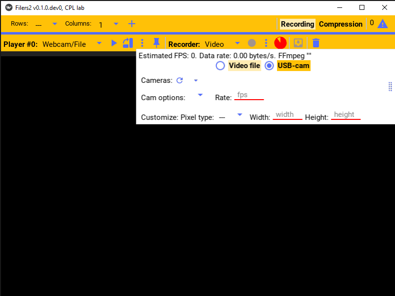Click the refresh button to refresh the list of available webcams.
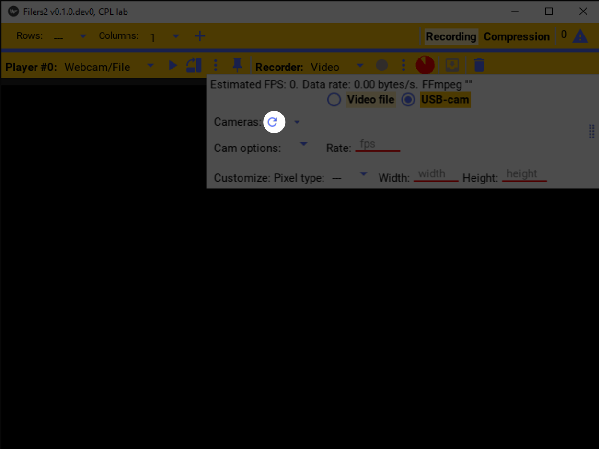The first webcam should be automatically selected.
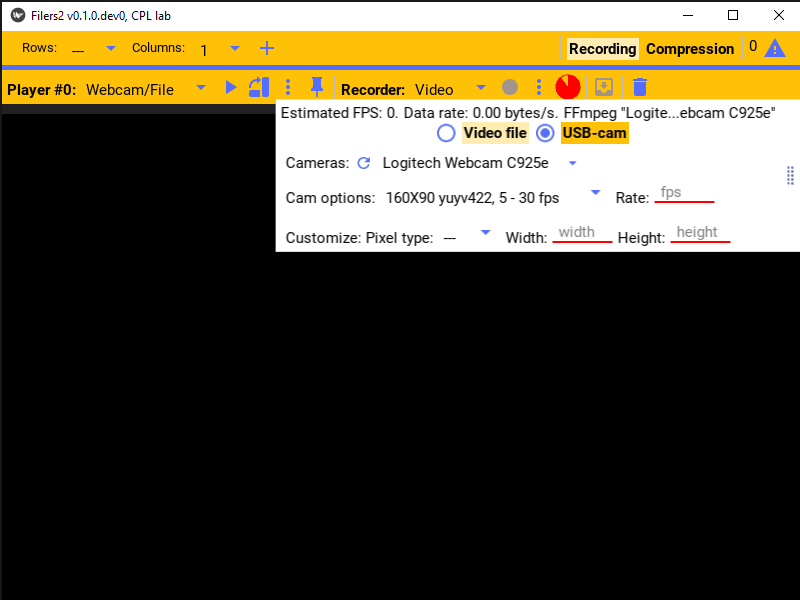Select your webcam from the dropdown list of cameras
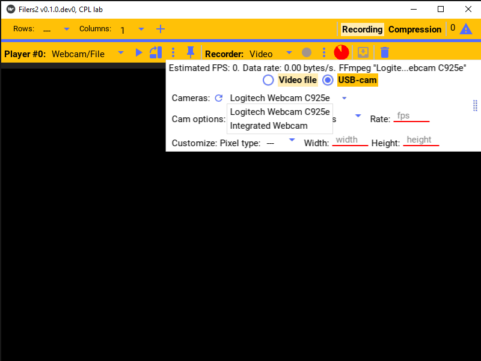Camera options
Each camera supports a specific combination of image sizes, pixel formats, and frame rates.
Click the cam options to show the list of supported image formats.
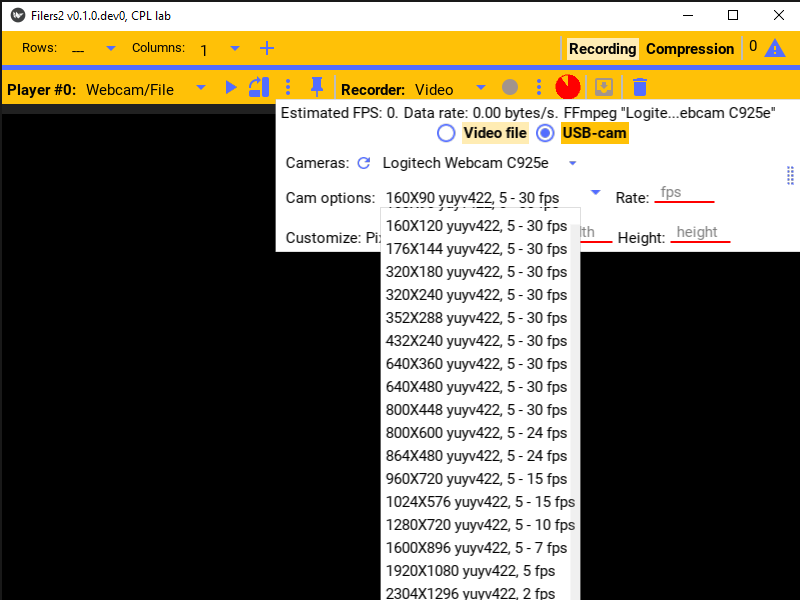The typical structure is of each item is: the picture size in width x height, the pixel format of the image, and the supported frame rate range.
Typical pixel formats are rgb or yuv. RGB tends to use more space to represent the image, so yuv is often preferred when space is limited or writing to disk is a bottleneck.
640x480 is a good default frame size.
The options above are used to configure the camera. However, the player supports converting the images to a different size or format after receiving it from the camera. If the pixel format, width, or height fields are left blank, the camera image will be used directly; fill in these fields to specify a different value.
The frame rate (fps) range indicates the frame rates supported for each configuration. By default it will use the largest frame rate for that configuration. However, if the system is not able to stream as quickly, frames will be dropped and the effective frame rate will be less. When recording to a mkv file format (the default), the frame rate does not matter because frame timestamp are recorded as received by the player. Many other formats however (e.g. mp4), can only record frame timestamps as integer multiples of the period (1 / fps) so timestamps are forced to these values when recorded. This can lead to timestamp collision or padded frames. So when using e.g. mp4, the lowest practical frame rate that can be maintained by the camera, as shown in the player status while the camera is playing, should be used.
Once the camera is playing, a estimate of the frame rate and the data rate (space required to save the raw images for each second) is shown at the top of the settings. Examples of different frame sizes are shown below. Notice that at very large frames sizes, the frame rate is significantly reduced in order for the camera to maintain a similar data rate.
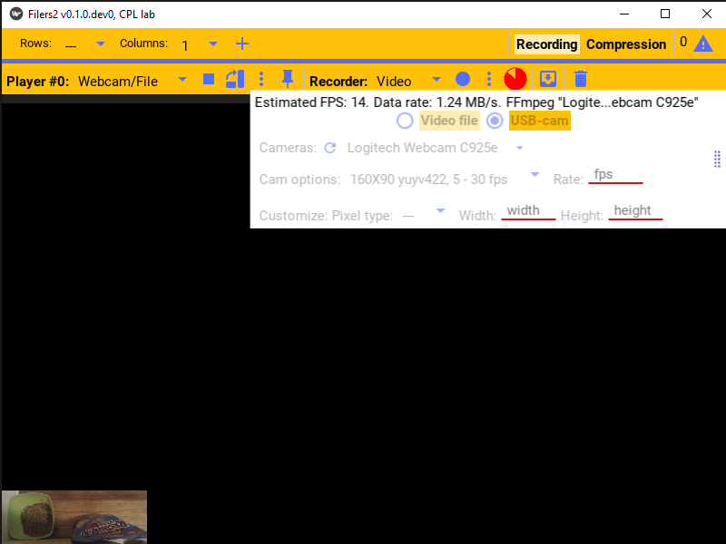 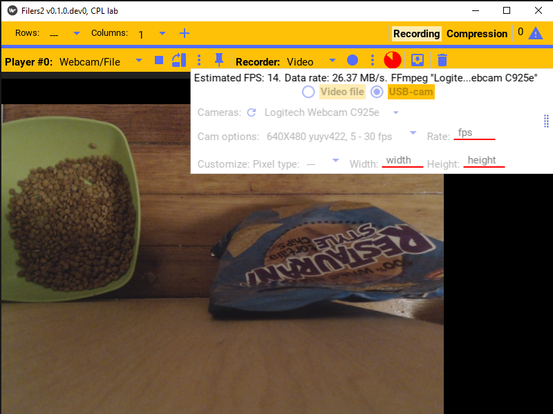 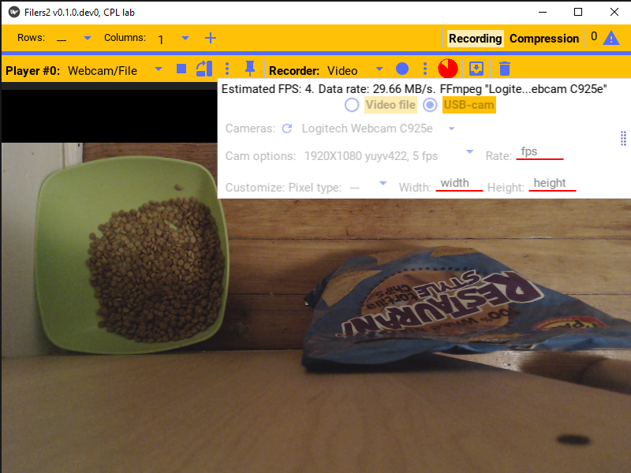 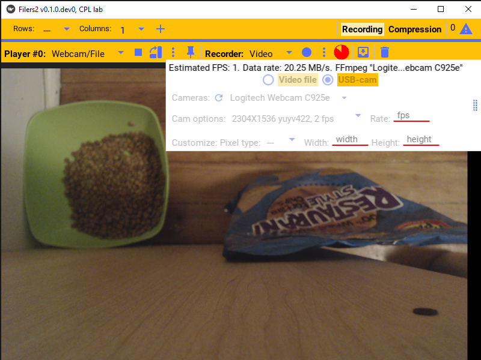Video file/stream
The player also supported playing from a video file, webstream, or other non-typical sources.
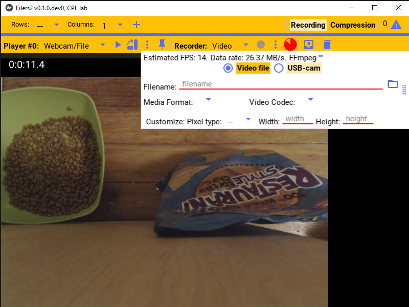For example a file can be selected using the browse button or typed into the filename field and the file will be played.
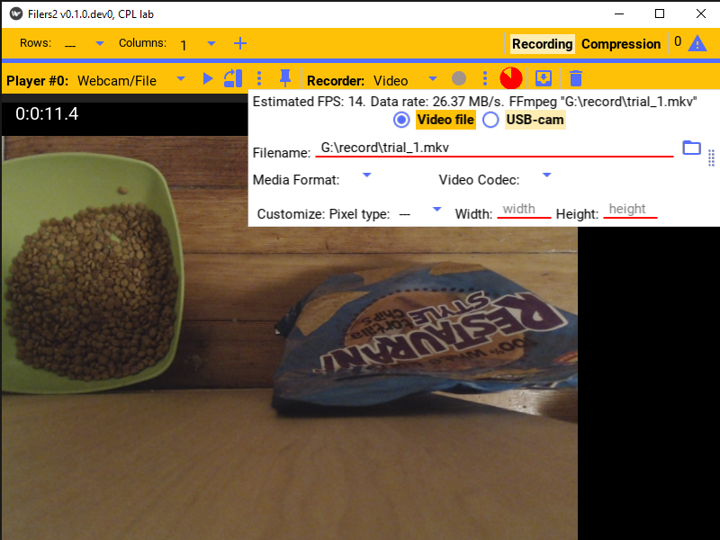The other options are useful when playing other sources, e.g. a webstream.
For example to play the webstream at rtsp://wowzaec2demo.streamlock.net/vod/mp4:BigBuckBunny_115k.mov,
use that as the filename and select rtsp as the Media Format.
The other options can be similarly specified as needed.
Network
The network player allows you to play video from another Filers2 instance that is streaming it video to the network. This player is able to play that stream.
E.g. consider a computer that is connected to the camera, but is unable to store the video. A good option is to then stream the video to another computer over the network, and the other computer will save it as needed. The configuration is then to make the camera connected computer be a “network recorder” and select “Network” as the player source in the other computer.
Before it can be played, the appropriate network address of the streaming computer and the port it’s streaming on must be specified. Then, once “open connection” is pressed and the connection succeeded, the player is ready to play.
See the recording documentation for more details.
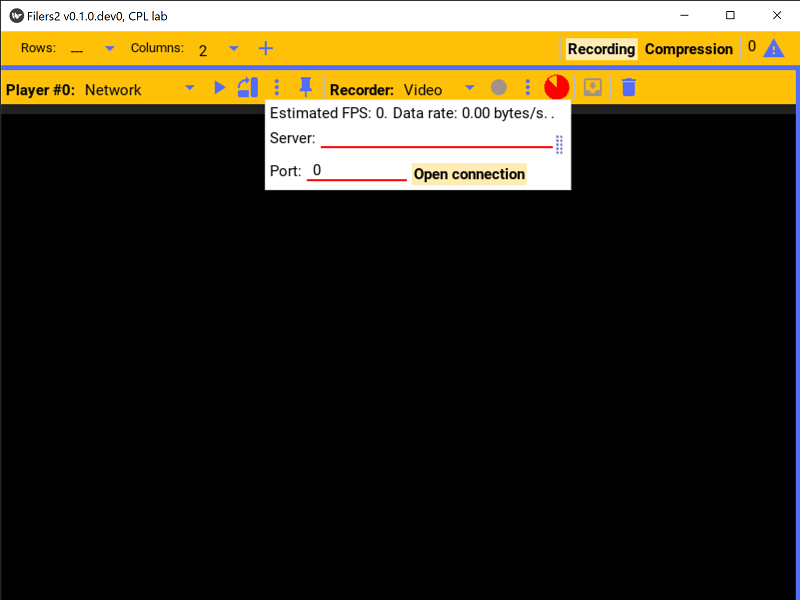